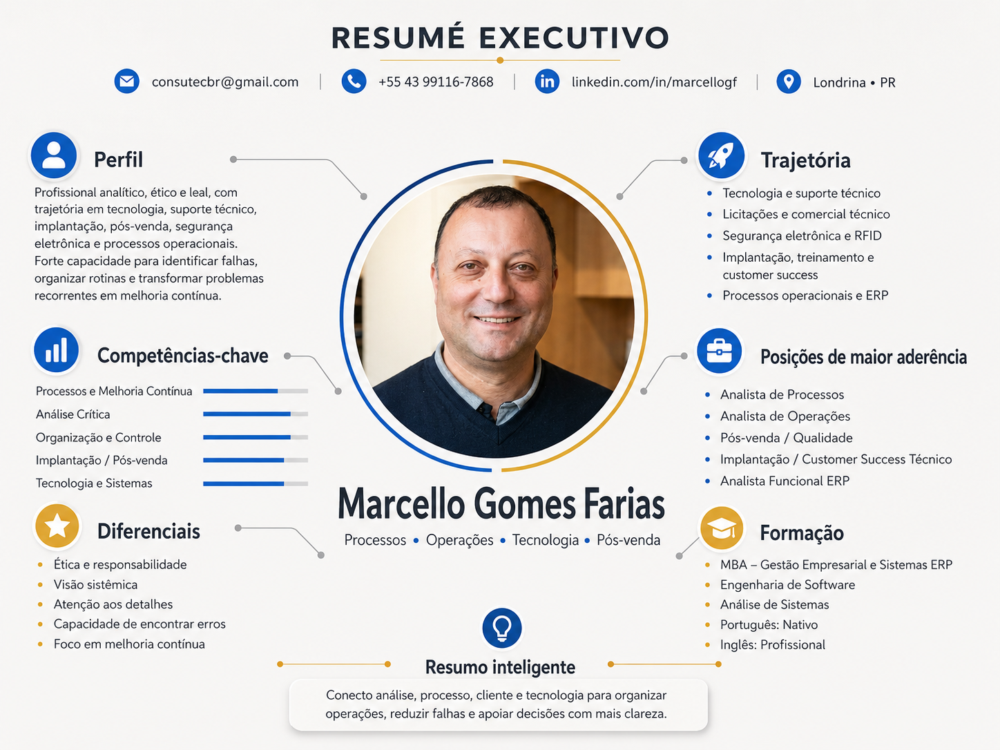

resume executivo para diretoria, RH e liderancas operacionais
Transformo falhas operacionais em processo, clareza e decisao.
Profissional analitico, etico e orientado a melhoria continua, com trajetoria em tecnologia, suporte tecnico, implantacao, pos-venda, seguranca eletronica, RFID, operacao e sistemas. Minha melhor contribuicao aparece onde existem falhas recorrentes, gargalos entre areas e necessidade de estruturar a rotina com mais confiabilidade.
Conecto analise, operacao, cliente e tecnologia para apoiar decisao com mais clareza.
Perfil com forte aderencia a empresas de medio porte que precisam crescer com menos improviso e mais processo.
Foco atual
Processos, operacoes, implantacao e funcao tecnico-comercial
Destaques
Analise critica, organizacao, pos-venda, ERP e melhoria continua
Leitura executiva
Base tecnica, leitura de processo e boa articulacao entre areas.
Em vez de um perfil preso a uma unica caixa, esta pagina posiciona Marcello como um profissional de interface: entende a linguagem tecnica, conversa com cliente, percebe risco operacional e ajuda a transformar problemas repetidos em fluxo, criterio, rotina e acompanhamento.
Util quando a operacao precisa ganhar previsibilidade sem virar burocracia.
A trajetoria de Marcello mostra repertorio para enxergar o fluxo completo entre atendimento, operacao, sistema, cliente e entrega. Isso cria aderencia a contextos onde diretores precisam de gente confiavel para organizar a casa e reduzir ruido entre areas.
- Capacidade de identificar falhas recorrentes e estruturar melhorias aplicaveis.
- Boa ponte entre linguagem tecnica, operacao real e necessidade gerencial.
- Perfil consistente para apoiar decisao, implantacao e evolucao de processo.
Proposta de valor
Onde eu gero mais valor
Quando a empresa precisa de alguem capaz de ler a rotina real, reduzir ruido entre areas e transformar recorrencia em metodo.
Operacao
Mapeamento de fluxo, organizacao de rotinas, acompanhamento de gargalos e melhoria continua.
Cliente
Pos-venda, implantacao, suporte, treinamento e articulacao entre expectativa e entrega.
Sistemas
Leitura funcional para ERP, documentacao, rastreabilidade, status e apoio a decisao.
Posicoes de maior aderencia
Maior aderencia em processos, cliente, implantacao e operacao tecnica.
Selecione um foco para ver como a experiencia de Marcello se converte em contribuicao pratica para a funcao.
Analista de Processos
Boa combinacao entre observacao critica, organizacao, leitura de falhas, padronizacao e acompanhamento de rotina.
- Leitura do fluxo real entre areas.
- Transformacao de erros recorrentes em rotina e controle.
- Estruturacao de status, regras, evidencias e responsabilidades.
Analista de Processos
Mapeamento, padronizacao, melhoria continua e reducao de retrabalho.
Analista de Operacoes
Rotina, acompanhamento, organizacao, indicadores e estabilidade operacional.
Pos-venda / Qualidade
Investigacao de causa raiz, suporte tecnico, experiencia do cliente e plano de acao.
Implantacao / CS Tecnico
Treinamento, onboarding, alinhamento de expectativa e acompanhamento de entrega.
Analista Funcional ERP
Traducao da operacao em regra, requisito, tela, processo e rastreabilidade.
Consultor Tecnico-Comercial
Apoio tecnico a vendas, licitacoes, especificacao e relacao com cliente B2B.
Trajetoria
Uma trajetoria guiada por tecnologia, cliente e organizacao operacional.
Tecnologia e suporte tecnico
Atuacao com suporte, infraestrutura, software, treinamento e entendimento detalhado de problema tecnico.
Licitacoes e comercial tecnico
Leitura de demanda, proposta, especificacao e interface entre necessidade do cliente e solucao.
Seguranca eletronica e RFID
Projetos, implantacao, performance, suporte e relacionamento em operacoes mais tecnicas e exigentes.
Pos-venda, treinamento e customer success
Atuacao em acompanhamento de cliente, resolucao de problema, implantacao e sustentacao da experiencia.
Processos operacionais, ERP e industria moveleira
Leitura de fluxo, organizacao operacional, melhoria, sistemas internos e aderencia ao ambiente industrial.
Competencias e diferenciais
Leitura critica, organizacao e melhoria aplicada a rotina real.
Competencias-chave
Processos e melhoria continua
Leitura de fluxo, falhas, padronizacao e melhoria pratica.
Analise critica
Capacidade de observar detalhe, causa raiz e oportunidade de ajuste.
Organizacao e controle
Rotina, status, evidencias, acompanhamento e clareza operacional.
Implantacao e pos-venda
Cliente, onboarding, treinamento, suporte e estabilizacao da entrega.
Tecnologia e sistemas
ERP, entendimento funcional, documentacao e apoio a decisao.
Diferenciais percebidos
Etica e responsabilidade
Visao sistemica
Atencao aos detalhes
Capacidade de encontrar erros
Foco em melhoria continua
Relacionamento tecnico com cliente
Boa leitura operacional
Confiabilidade e lealdade
Formacao e idiomas
- MBA em Gestao Empresarial e Sistemas ERP
- Engenharia de Software
- Analise de Sistemas
- Portugues nativo
- Ingles profissional
Resumo visual
Um resumo sintetico em uma pagina, apoiado por uma apresentacao digital objetiva.

Direcionamento profissional
O posicionamento mais forte de Marcello esta em empresas que valorizam maturidade operacional, relacao proxima com cliente e capacidade de organizar crescimento sem perder controle.
Ha aderencia especial para funcoes em processos, operacoes, pos-venda, qualidade, implantacao, suporte consultivo, area tecnico-comercial e analise funcional ligada a ERP e sistemas internos.
Mensagem final
Se a empresa precisa ligar operacao, cliente, processo e tecnologia, esta conversa faz sentido.
Disponivel para dialogos sobre posicoes analiticas, estrategicas, tecnico-comerciais e de melhoria operacional.